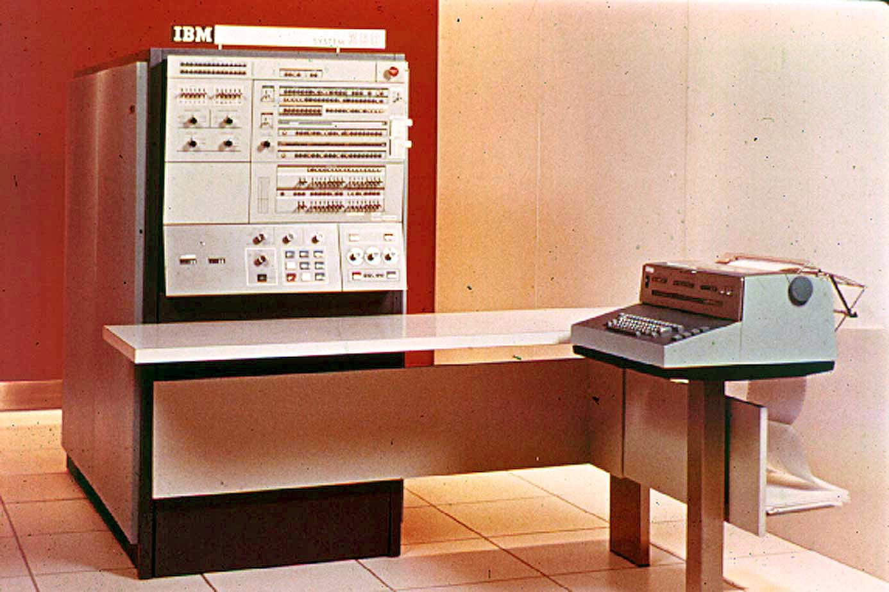
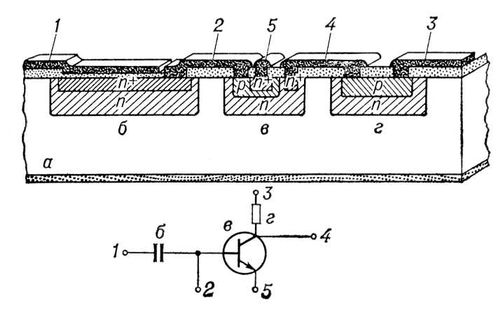

История и создание
ЭВМ третьего поколения начали появляться в 1960-е годы и стали использовать интегральные схемы (ИС) вместо вакуумных ламп и транзисторов. Это значительно уменьшило размеры компьютеров, улучшило их производительность и снизило стоимость. Основным компонентом ЭВМ третьего поколения стали интегральные схемы (ИС), представляющие собой наборы транзисторов, резисторов и других элементов, размещённых на одном полупроводниковом кристалле.
В отличие от компьютеров второго поколения, использующих отдельные транзисторы, ИС позволяли создать более компактные и надежные машины. Одним из первых примеров ЭВМ третьего поколения стал компьютер IBM 360, который был представлен в 1964 году. Он стал революционным, так как позволял использовать одну и ту же архитектуру для различных типов вычислительных задач.
Компьютеры третьего поколения использовались в различных областях: от научных исследований до коммерческих приложений. Они стали значительно более доступными и подходили для массового использования, в том числе в банковской сфере, на производстве и в университетах.
Как это работает: Интегральные схемы
Интегральные схемы (ИС) сыграли ключевую роль в третьем поколении ЭВМ. Эти устройства позволяют размещать множество электронных компонентов на одном чипе, что обеспечивало компактность и улучшало производительность. В ИС соединяются транзисторы, резисторы, конденсаторы и другие компоненты, что позволяет выполнять вычисления, хранить данные и выполнять логические операции.
Интегральные схемы позволяли создавать высокоскоростные и надежные вычислительные системы, которые в свою очередь ускоряли вычисления и обеспечивали более стабильную работу ЭВМ.
Основные принципы работы
ЭВМ третьего поколения работали по принципу многозадачности, что позволило одновременно обрабатывать несколько программ и процессов. Эти машины также обеспечивали высокий уровень автоматизации: операционные системы стали развиваться, позволяя пользователям работать с компьютерами с минимальными знаниями о внутренних процессах. В отличие от предыдущих поколений, пользователи могли вводить программы и данные через терминалы, а не вручную подключать провода и настраивать оборудование.
Применение и наследие
ЭВМ третьего поколения оказали огромное влияние на развитие науки, промышленности и бизнеса. Их компактность и эффективность позволили компьютерам стать важным инструментом в большинстве областей человеческой деятельности. Например, компьютеры третьего поколения активно использовались в расчетах для проектирования сложных инженерных объектов, в управлении производственными процессами и в научных исследованиях.
Развитие ЭВМ третьего поколения стало основой для появления более сложных и мощных компьютеров следующего поколения, которые продолжили развивать области вычислительных технологий, включая развитие персональных компьютеров в 1970-1980-х годах.